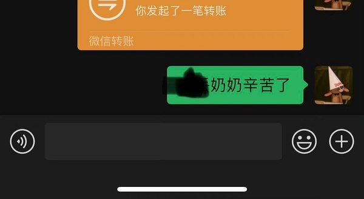
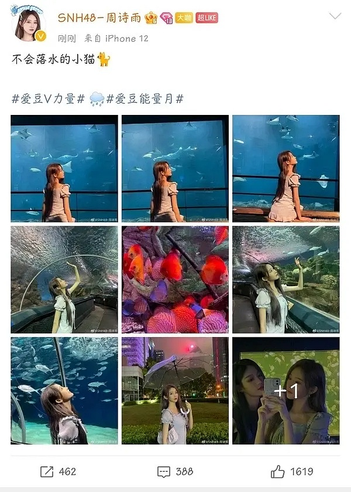
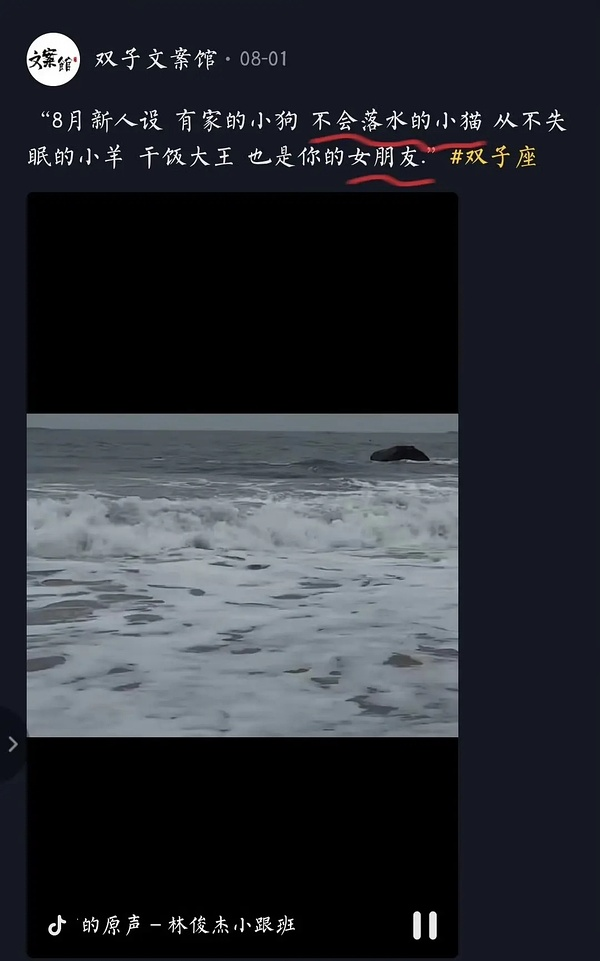
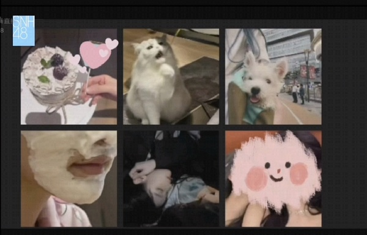
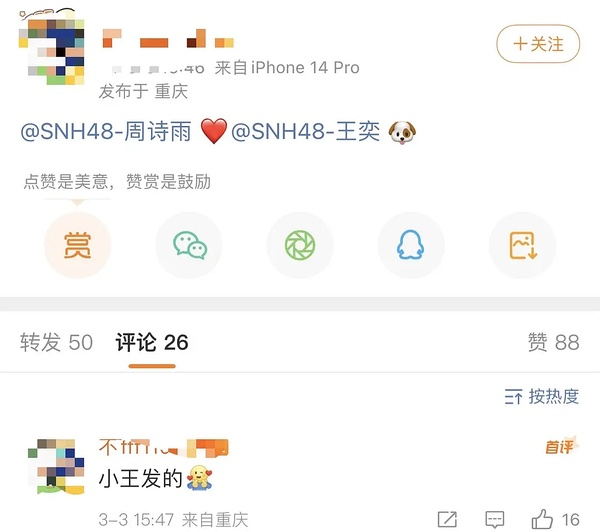
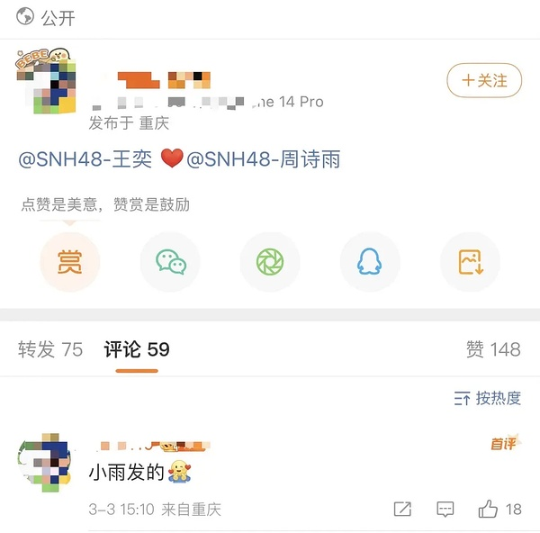
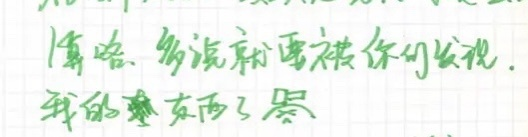
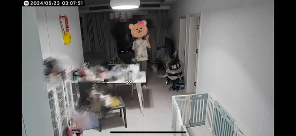
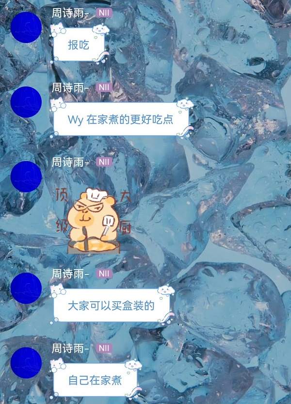

4781有哪些瞬间你觉得很真，讲讲细节
回复
楼主
2023-09-16 00:26:14 江苏
对不起。今天这个电台我要磕晕了。所有都很好磕
请多多建设
用户76
2023-09-16 00:47:59 福建
在大家都在骂，这时候舞cp对双方个人都完全没有好处的时候，更努力向外界证明两人的感情的时候，就狠狠感动
用户12
2023-09-16 01:18:46 广东
比如现在的电台，刚wy一回来就打算给公主倒热水让泡脚，而且还想着法给公主做姜汁撞奶之类的东西吃
以前有次公主电台已经很晚了，说到wy头发颜色像土豆突然想吃薯条，wy立马就说现在就可以给你做。她们电台时更放松更接近私底下的生活状态，也就更好嗑了
用户17
2023-09-16 04:29:09 陕西
比如现在的电台，刚wy一回来就打算给公主倒热水让泡脚，而且还想着法给公主做姜汁撞奶之类的东西吃
公主想吃姜撞奶，网易第一反应不是说不会做，而是问“怎么做？”，然后马上网上搜了，看到要用老姜，还说要去借老姜
楼主
2023-09-17 09:27:32 江苏
这个电台太美好了https://weibo.com/6158559618/4946755243999695
用户56
2023-09-17 10:20:34 甘肃
太多了
用户77
2023-09-17 10:36:32 上海
以前有次公主电台已经很晚了，说到wy头发颜色像土豆突然想吃薯条，wy立马就说现在就可以给你做。她们电台时更放松更接近私底下的生活状态，也就更好嗑了
确实 这里很好嗑
用户12
2023-09-17 13:03:38 广东
这个电台太美好了https://weibo.com/6158559618/4946755243999695
怎么有人一进门就想着幇lp倒洗腳水的，太会谈学不来
用户71
2023-09-17 16:35:45
眼神
用户78
2023-09-19 14:03:08 重庆
【【诗情画奕】请查收来自xql双标日常-哔哩哔哩】 https://b23.tv/cckEClC

说个近的 网易口袋发的 情头直接不遮了
用户78
2023-09-19 14:03:46 重庆
还有在匈牙利直播 网易被粥食欲可爱到下意识摸摸头 太好磕了
用户79
2023-09-19 14:09:59 辽宁
两只凤 送五金 比金子还真
用户80
2023-09-19 14:23:23 广西
“有的是人给我捏脚”
“有的是人跟我幽会”
4781牌香醋，包甜
“有的是人跟我幽会”
4781牌香醋，包甜
楼主
2023-10-09 23:47:12 江苏
世界纷纷扰扰 业主可可爱爱🥰
用户15
2023-10-10 00:00:04 海南
感觉对于🐗来讲，这应该是20年该讨论的话题，暧昧期的感觉整个扑面而来😂 现在从本人到饭圈已经完全是默认在谈的氛围了，530那次直播间弹幕完全情侣提问吓鼠人了。yzg该进步了，现在得讨论爱情保鲜的秘诀了
...
笑死 前几天双人直播正好就是都在问保鲜秘诀
用户15
2023-10-10 00:04:19 海南
最近又在重新补档直播cut，hjy谈到那次关门吵架事件的是：我猜她（zsy）可能觉得wy去说就已经相当于我们一起去说，但是我又觉得她们是两个人她们又不是一体，我跟wy说跟我跟zsy说是不同的。
用户81
2023-10-10 01:25:13 内蒙古
小狗头套
楼主
2023-12-10 20:54:19 江苏

“不会落水的小猫”
楼主
2023-12-10 20:54:19 江苏
”不会落水的小猫“

楼主
2023-12-10 20:54:36 江苏
用户59
2023-12-10 21:03:38 福建
这真的好细节 8月新人设 不会落水的小猫 你的女朋友
楼主
2023-12-10 21:07:36 江苏
这真的好细节 8月新人设 不会落水的小猫 你的女朋友
以前光嗑“女朋友”和“双子文案馆”了，没想到730一出还有新嗑点
楼主
2024-03-03 19:07:35 江苏
好久没建设了，贴个剪辑吧【诗情画奕｜半生缘·我们在这里相遇-哔哩哔哩】 https://b23.tv/rIbE2VZ
用户82
2024-03-03 21:11:24 黑龙江
很配的两个人，这多年身边的人还是对方，甚至前几天金曲双人舞歌词be都要改一下，我们才不be！
用户83
2024-03-03 23:02:18 河北
其实正常倍速下这个盯唇只是一瞬间，当时粉丝在起哄抱一个，看官摄真的是不知道对于她俩而言抱一下有什么好害羞的
...

纪念日朋友圈
用户84
2024-03-03 23:36:28 江西

今天握手
用户84
2024-03-03 23:36:40 江西
今天握手

用户85
2024-03-04 02:03:21 安徽
常看常新
用户86
2024-03-04 02:30:29 上海
真的我感觉马上两人就要巡演了…
楼主
2024-03-04 09:15:52 江苏
真的我感觉马上两人就要巡演了…
爱信等
用户87
2024-03-04 09:25:26 内蒙古
“你是zsy 你就是特点” 在wy内心深处zsy是最美最好的那一个，这是爱的基础
用户25
2024-03-04 23:39:55 英国
2020年总选，本来说如果zsy不进圈她家里就让她退了，后来zsy进圈了，wy听到zsy名次的时候特别激动，抱着zsy哭了好久。结束时两个人手牵着手离开的场馆。那晚后wy在自己小号上写了“难得如愿”四个字
...
而且这一年wy自己没有进圈🥲
楼主
2024-03-21 13:01:32 江苏
你们这个有点太情侣了
楼主
2024-03-21 13:01:44 江苏
你们这个有点太情侣了
用户88
2024-03-21 15:49:10 贵州

手柄名称粥粥bd11，家庭味十足
哈哈哈哈哈哈哈哈哈哈哈哈哈
楼主
2024-03-28 13:08:00 江苏
你们在干嘛！！！
用户89
2024-03-28 13:18:47 湖北
小日记ep2有点太会麦了😭😭😭开幕雷击，床戏上演
楼主
2024-04-26 19:57:03 江苏
爱一个人的时候总会考虑很多，表现出太多占有欲会不会让对方感觉不自由。你告诉她会介意她有自己不认识的朋友的时候，不断的对视与垂眸是想传达什么呢？而你得知她会介意时思索的那几秒里，微微上扬的嘴角又代表什么呢？已经磨合得很好的阶段，这份问答有让彼此惊喜到吗？
楼主
2024-04-26 23:21:30 江苏
既然都这样了为什么不能那样😇
用户90
2024-04-26 23:23:16 甘肃
爱一个人的时候总会考虑很多，表现出太多占有欲会不会让对方感觉不自由。你告诉她会介意她有自己不认识的朋友的时候，不断的对视与垂眸是想传达什么呢？而你得知她会介意时思索的那几秒里，微微上扬的嘴角又代表什么呢？已经磨合得很好的阶段，这份问答有让彼此惊喜到吗？
...
最大的占有欲是渴望你对我有占有欲
用户91
2024-04-27 00:52:14 广东
爱一个人的时候总会考虑很多，表现出太多占有欲会不会让对方感觉不自由。你告诉她会介意她有自己不认识的朋友的时候，不断的对视与垂眸是想传达什么呢？而你得知她会介意时思索的那几秒里，微微上扬的嘴角又代表什么呢？已经磨合得很好的阶段，这份问答有让彼此惊喜到吗？
...
劳师说得真好😻😻😻
楼主
2024-05-16 22:52:51 江苏
新婚快乐呀🥰 https://weibo.com/5815965189/5034781806956122
用户92
2024-05-16 22:55:21 福建
这个帖子让人感到幸福
用户93
2024-05-16 22:55:48 湖南
特别特别可爱的两个🥰
楼主
2024-05-16 22:59:24 江苏

我时常会因为被当做外人而爽到
用户94
2024-05-16 23:13:00 浙江
heart暖暖
楼主
2024-05-23 14:18:52 江苏

🔥一个人出差🔥凌晨三点🔥火热难耐🔥小米摄像头🔥带给你家的温暖🔥
用户36
2024-06-10 21:16:26 北京
五金🥰🥰
用户95
2024-06-10 21:29:21 北京
金曲暗场之后亲亲，当时在现场，看的清清楚楚😇
楼主
2024-06-10 21:29:23 江苏
还差三金🥰
楼主
2024-06-10 21:33:24 江苏
最近非常好笑非常可爱的一次妻管严https://weibo.com/6092861390/5042064653814972
用户96
2024-06-10 22:05:16 四川
重温 甜鼠了
楼主
2024-07-04 11:01:28 江苏
笑啥呢你俩
用户36
2024-07-04 11:54:06 北京
“走开走开走开”吃醋好磕
楼主
2024-07-10 23:23:05 江苏
“要一直陪在我身边哦”
用户97
2024-07-10 23:38:47 江西
甜
楼主
2024-08-27 00:32:31 江苏

乱中插🐗甜蜜游玩
楼主
2024-09-03 21:49:57 江苏
感觉能爱很久
用户98
2024-09-03 21:59:58 辽宁
没有放开过彼此的手
用户99
2024-09-04 02:32:39 四川
太纯爱了🥹🥹🥹
用户100
2024-09-04 06:01:50 四川
每次光看看返图就很配很真
楼主
2024-09-06 13:48:49 江苏

超经意透露
楼主
2025-01-14 10:57:38 江苏
真的很吓人啊我好紧张你们为什么不紧张https://weibo.com/6498522196/5122504114833196